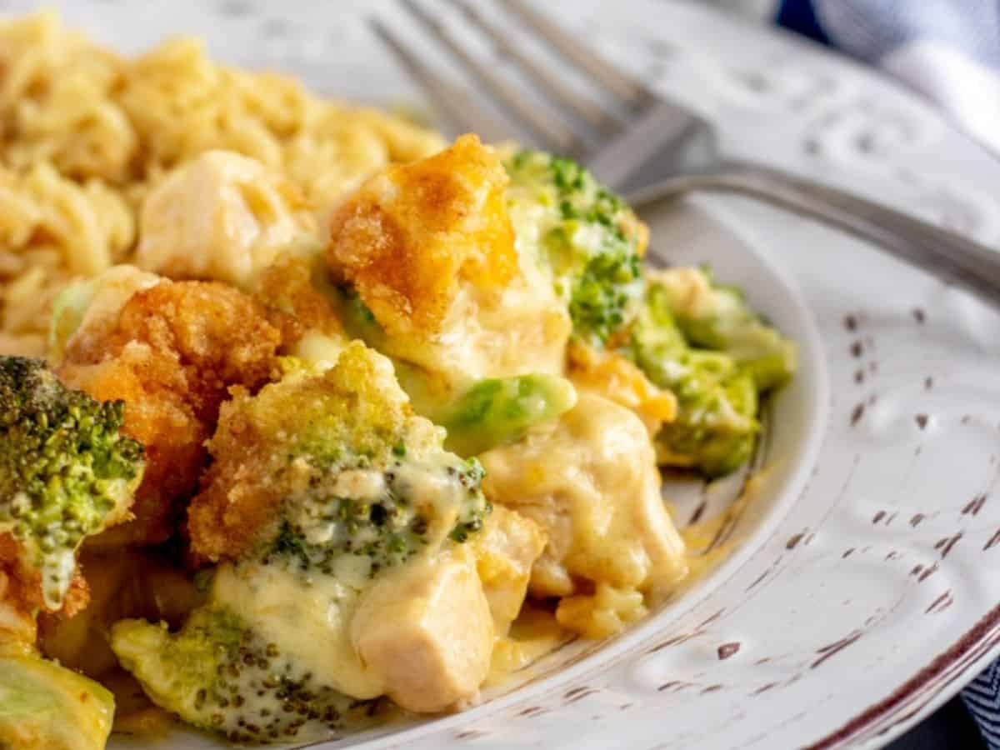

Chicken Divan

Discription
Chicken divan is a casserole made of chicken, broccoli, and Mornay sauce. It is named after it's place of invention, the Divan Parisien Restaurant inside the Chatham Hotel in New York. Chef Lagasi creatred the dish and it became the signature dish of the restaurant for many years. Chicken Divan is a great creamy dish best served on chilly fall and winter nights. Surly a recipe you will not regret making!
Ingredients
- 2 (10 oz) packages chopped frozen broccoli
- 6 cups cooked and shredded chicken
- 2 (10 3/4 oz) cans condensed cream of mushroom soup
- 1 cup mayonnaise
- 1 cup sour cream
- 1 cup grated sharp cheddar cheese
- 1 tablespoon fresh lemon juice
- 1 teaspoon curry powder
- 1/2 cup dry white wine
- 1/2 cup freshly grated Parmesan cheese
- 1/2 cup soft breadcrumbs
- 2 tablespoons melted butter
- to taste salt and freshly ground black pepper
Steps
- Preheat oven to 350 degrees
- Remove the outer weappers from the boxes of broccoli. Open on end of each box. Microwave on full power for 2 min, until thawed. Drain the broccoli and put into a 11X7 casserole dish that has been prepared with non stick cooling spray. Top with shredded chicken.
- In a medium bowl, combine the soup, mayonnaise, sour cream, cheddar cheese, lemon juice, curry powder, salt and pepper to taste, and wine. Whisk together to make a sauce. Pour the sauce over the broccoli and chicken. Mix well with a spatula.
- Pat down evenly and smooth with a spatula. In a small mixing bowl, stir together the Parmesan cheese, bread crumbs and butter and sprinkle over the top
- Bake for about 30-45 minutes.
Cook's note: Try topping with cheddar or gruyere cheese.